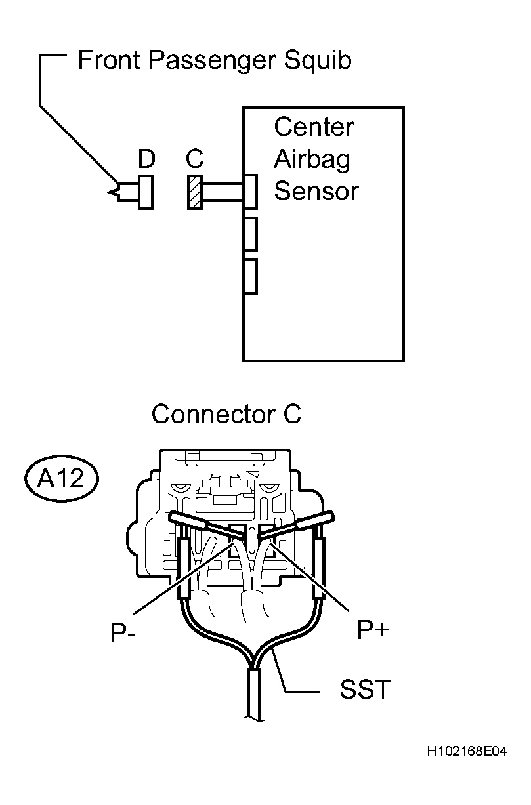
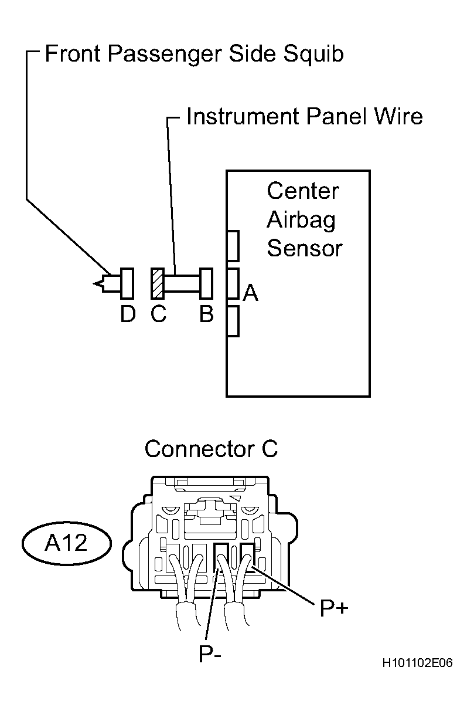

Inspection Procedure
- CHECK FRONT PASSENGER AIRBAG ASSEMBLY (PASSENGER SQUIB)
- Turn the ignition switch OFF.
- Disconnect the cable from the negative (-) battery terminal, and wait for at least 90 seconds.
- Disconnect the connectors from the front passenger airbag.
- Connect the white wire side of SST (resistance 2.1 Ω) to the instrument panel wire connector "C".
SST 09843-18060
CAUTION: Never connect a tester to the front passenger airbag (passenger squib) for measurement, as this may lead to a serious injury due to airbag deployment.NOTE:- Do not forcibly insert SST into the terminals of the connector when connecting them.
- Insert SST straight into the terminals of the connector.
- Connect the cable to the negative (-) battery terminal, and wait for at least 2 seconds.
- Turn the ignition switch ON, and wait for at least 60 seconds.
- Clear the DTCs stored in memory (see DTC CHECK / CLEAR ).
- Turn the ignition switch OFF.
- Turn the ignition switch ON, and wait for at least 60 seconds.
- Check for DTCs (see DTC CHECK / CLEAR
).
OK:
DTC B1805, B1806, B1807, B1808 or 52 is not output.
HINT:
DTCs other than DTC B1805, B1806, B1807, B1808 or 52 may be output at this time, but they are not related to this check.
OK : REPLACE FRONT PASSENGER AIRBAG ASSEMBLY

Courtesy of © TOYOTA, LICENSE AGREEMENT TMS1002NG : Go to Next Step
- CHECK CONNECTOR
- Turn the ignition switch OFF.
- Disconnect SST (resistance 2.1 Ω) from the instrument panel wire.
- Disconnect the cable from the negative (-) battery terminal, and wait for at least 90 seconds.
- Check that the instrument panel wire connectors (on the front passenger side airbag) are not damaged.
OK:
Lock button is not disengaged, and claw of lock is not deformed or damaged.
NG : REPAIR OR REPLACE INSTRUMENT PANEL WIRE
OK : Go to Next Step
- CHECK INSTRUMENT PANEL WIRE (PASSENGER SQUIB CIRCUIT)
- Disconnect the connector from the center airbag sensor.
- Connect the cable to the negative (-) battery terminal, and wait for at least 2 seconds.
- Turn the ignition switch ON.
- Measure the voltage of the wire harness side connector.
Standard voltage
TESTER CONNECTION - SPECIFIED CONDITION (VOLTAGE)Tester Connection Specified Condition A12-1 (P+) - Body ground Below 1 V A12-2 (P-) - Body ground - Turn the ignition switch OFF.
- Disconnect the cable from the negative (-) battery terminal, and wait for at least 90 seconds.
- Measure the resistance of the wire harness side connector.
Standard resistance
TESTER CONNECTION - SPECIFIED CONDITION (RESISTANCE)Tester Connection Specified Condition A12-1 (P+) - A12-2 (P-) Below 1 Ω A12-1 (P+) - Body ground 1 MΩ or higher A12-2 (P-) - Body ground - Release the activation prevention mechanism built into connector "B" (see DIAGNOSIS SYSTEM ).
- Measure the resistance of the wire harness side connector.
Standard resistance
TESTER CONNECTION - SPECIFIED CONDITION (RESISTANCE)Tester Connection Specified Condition A12-1 (P+) - A12-2 (P-) 1 MΩ or higher
NG : REPLACE CENTER AIRBAG SENSOR ASSEMBLY

Courtesy of © TOYOTA, LICENSE AGREEMENT TMS1002OK : REPAIR OR REPLACE INSTRUMENT PANEL WIRE